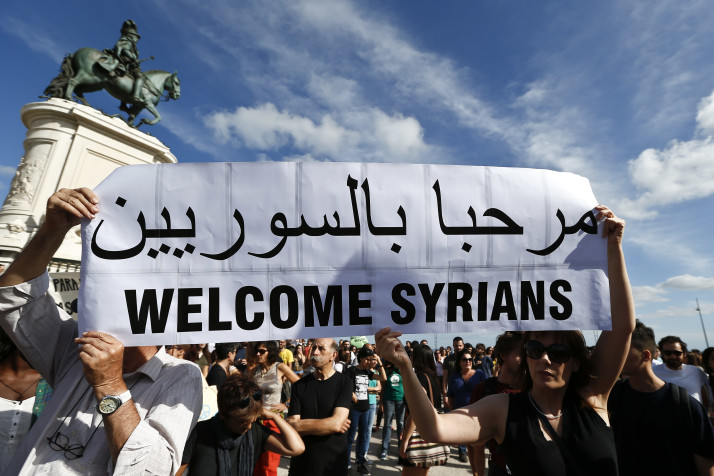

Portugal officially welcoming 10,000 refugees
2 March 2015
Portugal hopes its welcome for refugees will save Europe, if they can be persuaded to come.
Costa has unilaterally more than doubled the quota allocated to Portugal under a European Union program to relocate refugees languishing in Italy and Greece.
The 10,000 he’s agreed to receive is a drop in the ocean compared to the over 1.3 million people who have flooded into Europe over the past 14 months.
Yet the offer from small, economically challenged Portugal looks generous set against the line taken by countries shunning the EU plan, which is designed to relieve the Greeks and Italians by resettling 160,000 refugees around the 28-nation bloc.
“This crisis is a threat to European values,” Costa told parliament before flying off to last week’s EU summit. “We have to be resolute in tackling it, to maintain the essential value of human dignity.”
Sub header
He wants Portugal to set an example of European solidarity, as Poland, Hungary, Slovakia and others resist refugee relocation.
Smaller subhead
So far, however, just 149 refugees have trickled in to Portugal under the relocation plan.
That pitifully low number is due, Portuguese officials insist, more to the inefficiencies of the EU plan than any lack of readiness on their part.